4 Perguntas e respostas
4.1 Caso o endereço do site mude, como “comunico” isso ao blogdown?
config.toml -> baseurl
4.2 Como mudar o título do site que aparece na guia do browser?
config.toml -> title
4.3 Como mudar o número de posts que aparecem por vez em uma página na aba Blog?
config.toml -> paginate
4.4 Como mudar a imagem de fundo?
Colque a imagem nova em static/img e altere o endereço em config.toml -> header_image
4.5 Como mudar a imagem de erro 404?
Colque a imagem nova em static/img e altere o endereço em config.toml -> image_404
4.6 Como mudar o texto da página de erro 404?
config.toml -> title_404
4.7 Como adicionar um novo menu superior?
Vá em content e crie uma nova pasta, aqui você pode escolher o nome para a pasta que você preferir.

Crie um novo arquivo em Rmarkdown no formato abaixo:
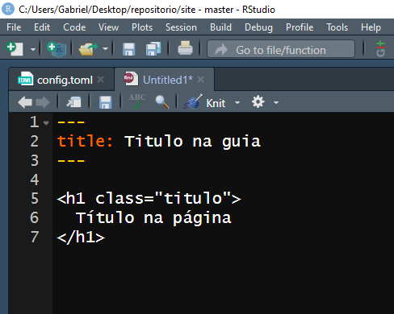
No yaml, o argumento title será o texto mostrado na guia do browser quando o usuário estiver acessando o menu. O comando h1 em html é equivalente ao # do Rmarkdown, mas recomendo que usem para o título na página essa estrutura pois class="titulo" é um bloco de código em css que programei para a fonte ficar maior que o normal quando o h1 tiver essa classe (arquivo em themes/hugo-theme-cleanwhite/static/css/hux-blog.min.css). Depois do título, o resto do arquivo pode ser escrito como um Rmarkdown normal.
Salve o arquivo com o nome index.Rmd.
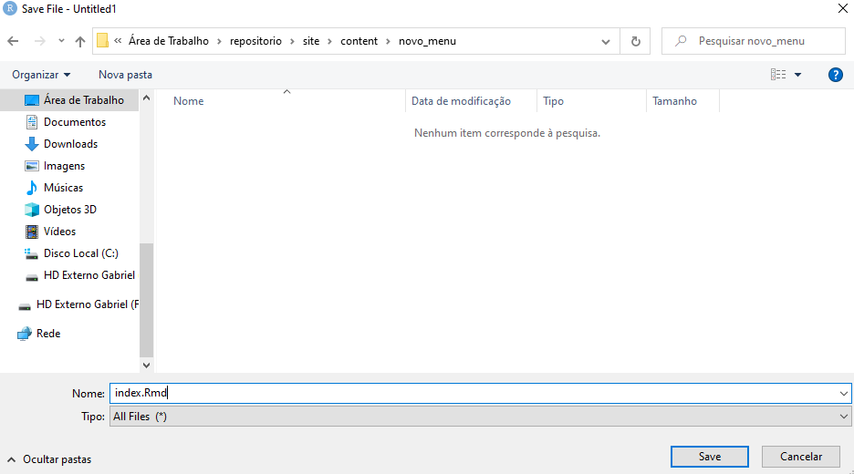
A função serve_site() irá renderizar o Rmd para html automaticamente (senão, salve algum arquivo para a função renderizar o site novamente ou rode o serve_site() de novo).

A página já está na pasta public (ou seja, já está no site), mas agora precisamos informar ao site que queremos que a página seja exibida como menu superior.
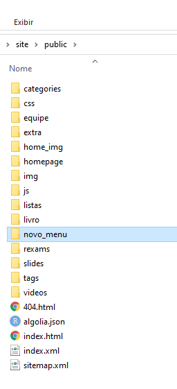
Se olharmos a prévia do site, o novo menu não foi adicionado.
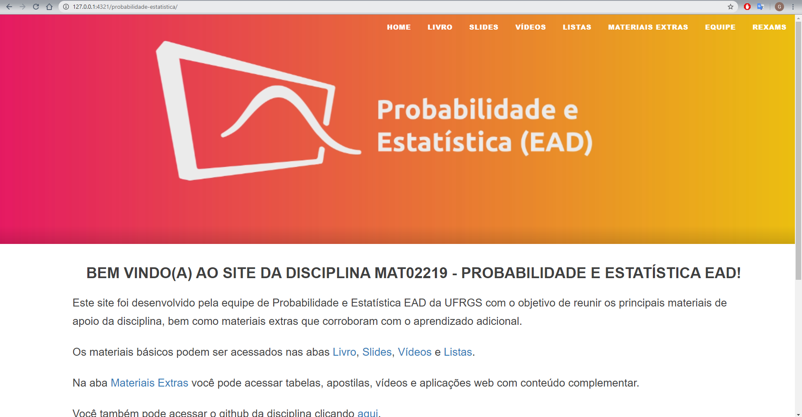
Mas se digitarmos manualmente o endereço da pasta na url, temos como acesar a página.
Obviamente, o usuário não vai adivinhar que existe um menu escondido no site, então se quisermos que ele o acesse, precisamos adicionar a página como um menu superior.
Vá em config.toml, no final do arquivo você deve ver um bloco de código parecido com isto:
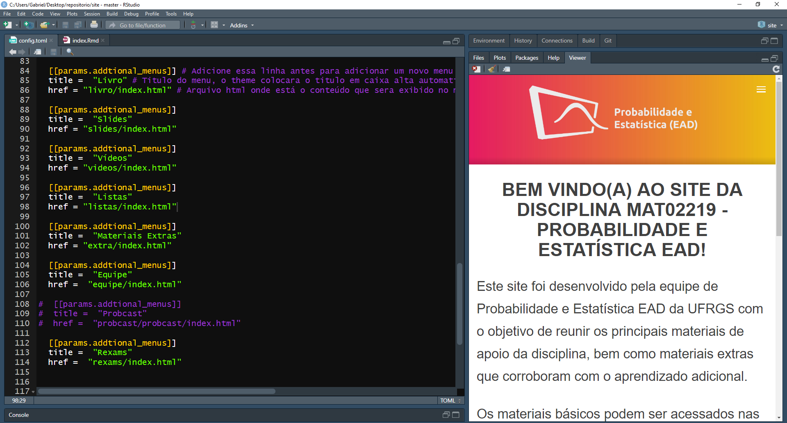
[[params.addtional_menus]] = Declara que você quer adicionar um novo menu
title = “Título do menu” = Informa o título do menu, note que o site sempre põe o texto em caixa alta.
href = “pasta_do_menu/index.html” = Endereço do arquivo html transformado pelo serve site apartir do Rmd.
Adaptando o exemplo:

Note o título na guia no canto superior esquerdo, o título na página e o nome menu teste na linha de menus.
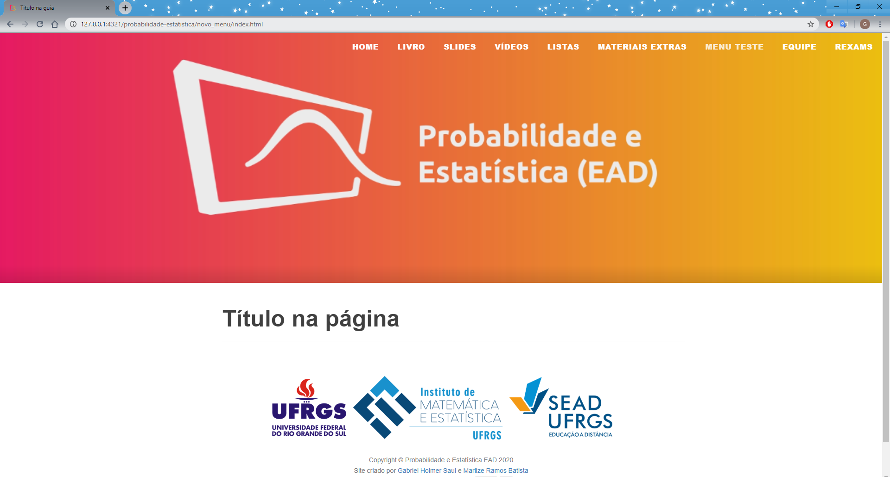
4.11 Como mudar a homepage?
O tema do site, cleanwhite, foi criado para ser um blog pessoal. Por default, a homepage é a lista de todos os posts que a pessoa criou. Para mostrar uma página fixa ao invéz da lista de posts, foi necessário fazer uma “gambiarra” no site. Assim, os passos para modificar o conteúdo da homepage são os seguintes:
Vá em content/homepage/home.Rmd e faça as alterações desejadas no arquivo (note que o arquivo não tem nome index.Rmd, mas você verá que para este caso isso não importa).
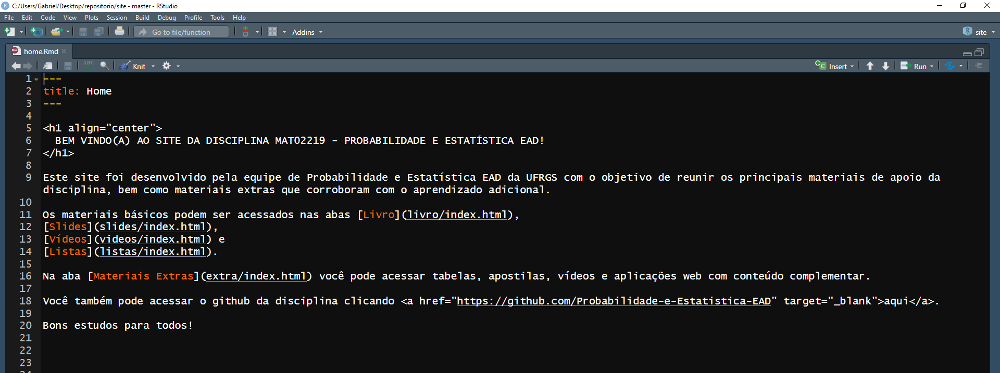
Salve o arquivo e isso irá ativar a função serve_site(), que irá transformar o arquivo Rmd em html. Abra o arquivo content/homepage/home.html e copie tudo menos as três primeiras linhas com o título.
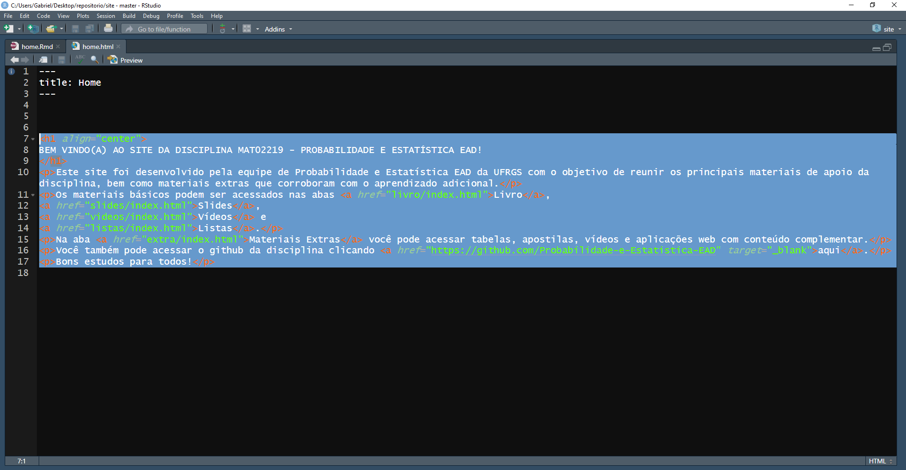
Vá em themes/hugo-theme-cleanwhite/layouts/partials/homepage.html e cole o código que você copiou entre os blocos de comentários “AQUI VAI O CODIGO HTML DO POST” e “AQUI ACABA O POST”.
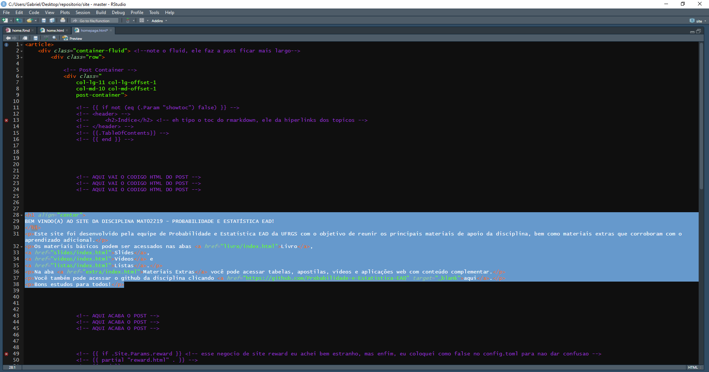
O arquivo homepage.html é a própria homepage, o que está no arquivo que não é conteúdo é responsável pela estrutura da página, apenas o que estiver entre os dois blocos de comentário é o conteúdo em html dá página. Seria possível programar a homepage direto em html, mas como o Blogdown renderiza o Rmd para html, somente é necessário mudar o Rmd.
O arquivo que realmente é responsável pela homepage, na verdade, é o themes/hugo-theme-cleanwhite/layouts/index.html
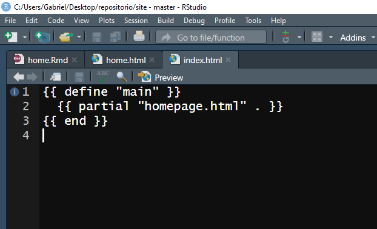
Esse arquivo mostra a homepage baseado em algum arquivo, aqui não é necessário modificar nada, é apenas para explicar como a homepage realmente é gerada.
Resumindo:
- Modifique o content/homepage/home.Rmd
- Rode o
serve_site() - Copie quase todo o conteúdo de content/homepage/home.html
- Cole no local indicado em themes/hugo-theme-cleanwhite/layouts/partials/homepage.html
- Rode o
serve_site()novamente
4.12 IMPORTANTE: Como funcionam os endereços de arquivos dentro dos códigos?
Como motivação, veja o arquivo content/listas/index.Rmd:
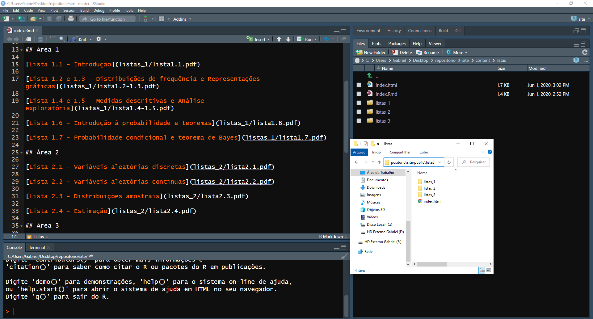
No diretório do arquivo index.Rmd estão as pastas com os arquivos em pdf, portanto, o endereço para os pdf’s são do estilo